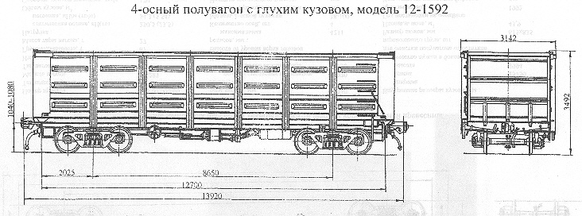

Назначение: для перевозки сыпучих, крупнокусковых, штучных и других грузов, не требующих защиты от атмосферных осадков
Параметры
| Номер проекта | 1592.00.000 |
| Технические условия | ТУ 24.00.807-82 |
| Модель вагона | 12-1592 |
| Тип вагона | 608 |
| Изготовитель | ЖЗТМ |
| Грузоподъемность, т | 71 |
| Масса тары вагона, т | 21,28 |
| Нагрузка: статическая осевая, кН(тс) |
228,08(23,05) |
| погонная, кН/м(тс/м) | 65(6,63) |
| Объем кузова, м³ | 83 |
| Скорость конструкционная, км/ч | 120 |
| Габарит | 0-ВМ(01-Т) |
| База вагона, мм | 8650 |
| Длина, мм: по осям сцепления автосцепок |
13920 |
| по концевым балкам рамы | 12700 |
| Ширина максимальная, мм | 3142 |
| Высота от уровня верха головок рельсов, мм: максимальная |
3492 |
| до нижней обвязки | 1232 |
| Количество осей, шт. | 4 |
| Модель 2-осной тележки | 18-100 |
| Наличие переходной площадки | нет |
| Наличие стояночного тормоза | есть |
| Внутренние размеры кузова, мм: ширина |
2878 |
| длина | 12700 |
| высота | 2240 |
| Площадь пола, м² | 36,55 |
| Год постановки на серийное производство | 1987 |
| Возможность установки буфера | нет |